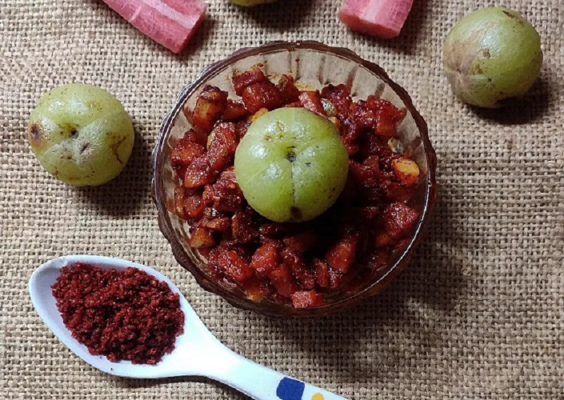
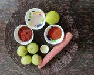
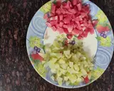
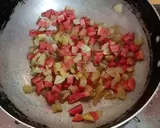
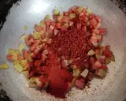
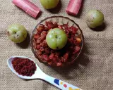
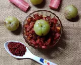

|
|
▢ 1 નંગ - ગાજર
▢2 ચમચી - તેલ
▢ ચપટી હિંગ
▢ દોઢ ચમચી - લાલ મરચું
▢ 1 ચમચી - ખાટા અથાણાં નો મસાલો
▢ 1 નંગ - લીંબુ નો રસ
▢ સ્વાદ મુજબ - મીઠું
|
|
સૌથી પહેલા બધી સામગ્રી લો. ત્યાર બાદ આમળા અને ગાજર ને ધોઈ નાના પીસ કરી દો.લીંબુ નો રસ કાઢી દો.
|  |  |
એક તાવડી માં તેલ મૂકી તેલ ગરમ થાય એટલે તેમાં હિંગ નાખી ગાજર અને આમળાને સાંતળી મીઠું નાંખી થોડીવાર માટે ચડવા દો. આમળા અને ગાજર થોડા સોફ્ટ થઇ જાય એટલે ગેસ બંધ કરી તેમાં લાલ મરચું અને અથાણાં નો મસાલો નાંખી હલાવી લીંબુ નો રસ પણ નાંખી દો.
|  |  |
ઠંડુ થાય પછી એર ટાઈટ ડબ્બા માં ભરી ફ્રીઝ માં મૂકી દો. રેડી છે આમળા અને ગાજર નું ખાટું અથાણું. સરસ લાગે છે...
|  |
|  |